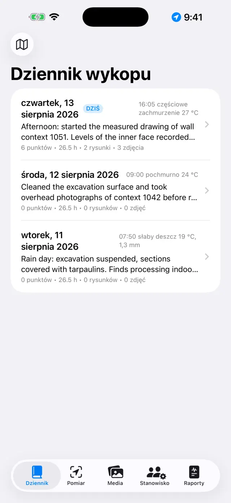
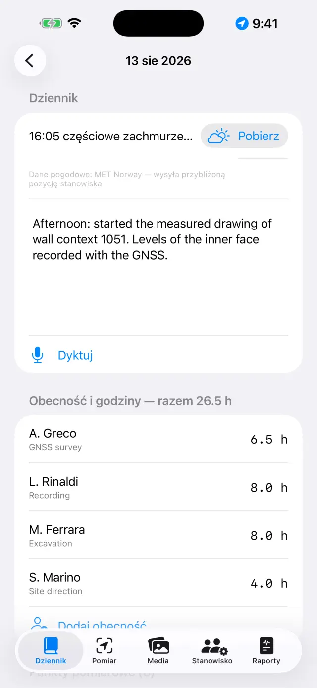
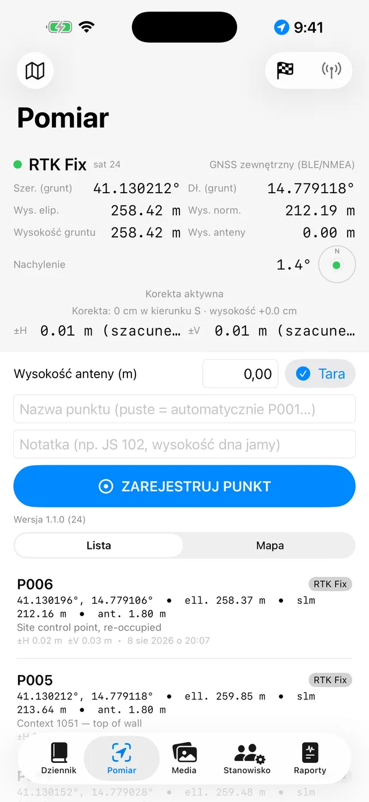
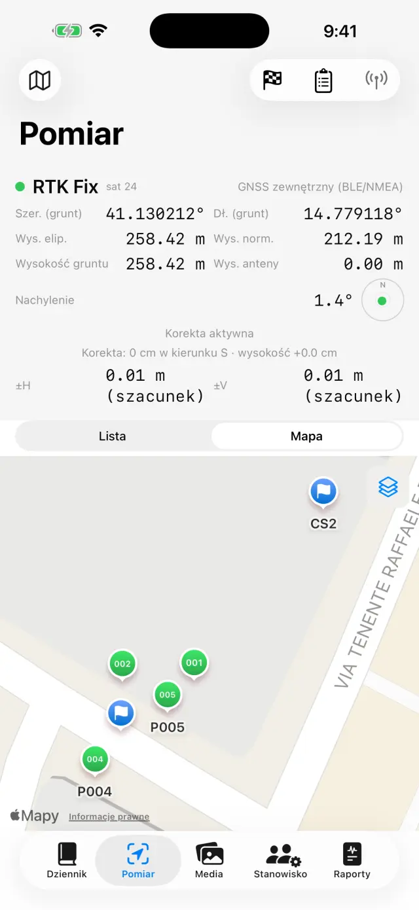
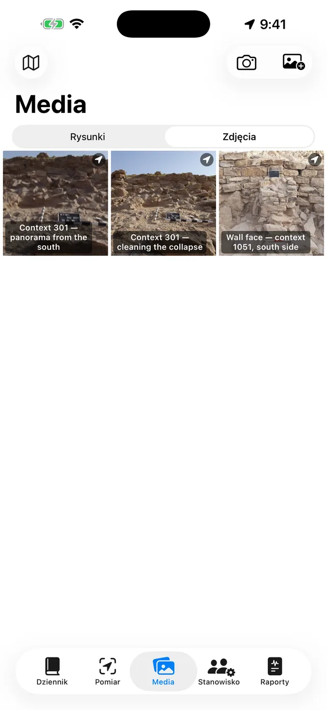
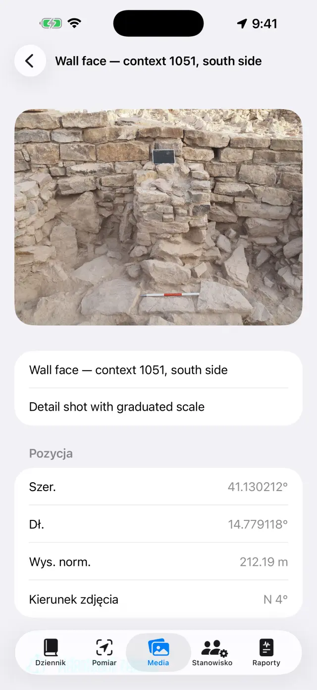
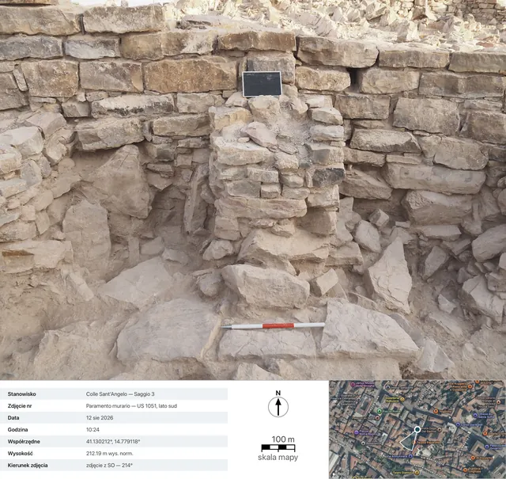
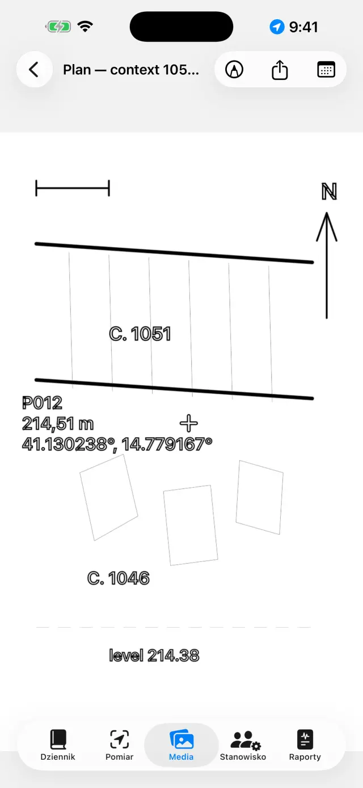
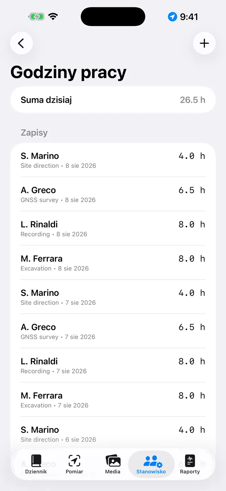
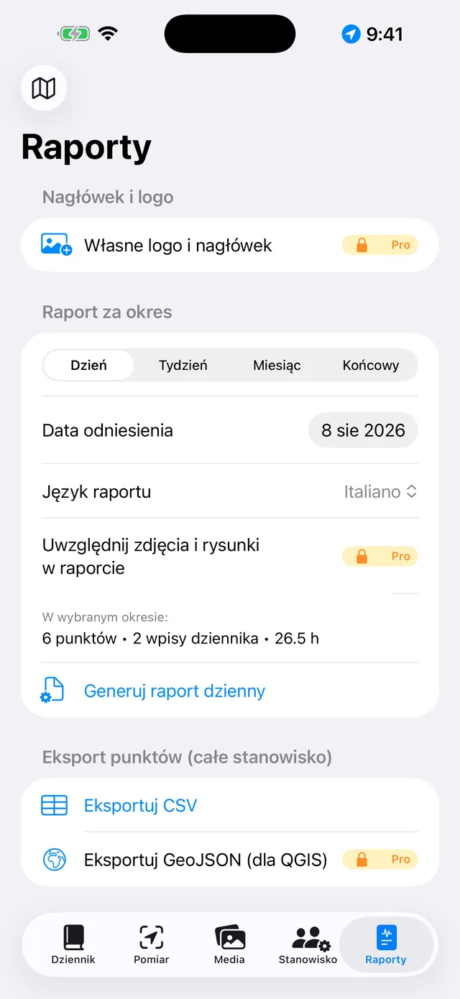

Cyfrowy dziennik wykopalisk na iPhone'a i iPada. 100% offline: dane pozostają na urządzeniu.
📱 Android: pobierz aplikację (APK, za darmo). Za pierwszym razem Android poprosi o zgodę na instalację z Chrome lub Plików; potem aplikacja sama proponuje aktualizacje.
❤️ Wesprzyj projekt — Giornale di Scavo jest darmowa, bez reklam i bez subskrypcji, a rozwijam ją w wolnym czasie. Jeśli przydaje ci się na wykopaliskach, możesz wesprzeć jej rozwój darowizną.
Liczy się jedna idea: każdy dzień wykopalisk to strona, która
wypełnia się sama. Rzeczy rejestruje się tam, gdzie mają miejsce — punkt GNSS w
zakładce Pomiar, zdjęcie w Mediach, godziny na Stanowisku — a strona dnia w
zakładce Dziennik zbiera to wszystko automatycznie. Pod koniec
tygodnia lub wykopalisk raporty powstają same na podstawie stron.
Typowy dzień
RanoOtworzyć stronę dnia, zanotować pogodę i wpis w dzienniku (można też podyktować przyciskiem Dyktuj)
ObecnośćNa zakładce Stanowisko zarejestrować, kto jest obecny, i godziny każdej osoby
PomiarZarejestrować punkty GNSS; przy RTK najpierw sprawdzić reper
ZdjęciaFotografować w zakładce Media: współrzędne dołączają się same
RysunkiOdrysować przekrój lub plan na zdjęciu (cyfrowa kalka)
JSZaktualizować karty wyeksplorowanych JS i ich relacje: JS
ZabytkiZe skrzynkami przed sobą zapisać, co wyszło z wykopu: Stanowisko → Zabytki
WieczoremZ zakładki Raporty wygenerować raport dzienny: PDF gotowy do wysłania
Pierwsze kroki
Przy pierwszym uruchomieniu jest już dostępne przykładowe stanowisko. Aby
utworzyć własne, dotknąć nazwy stanowiska u góry (ikona 🗺) →
Nowe stanowisko… i nadać mu nazwę (np. „Colle Sant'Angelo —
Wykop 3”).
Nazwa aktywnego stanowiska jest zawsze widoczna u góry: wszystkie zakładki
pokazują dane tego stanowiska. Aby zmienić stanowisko, dotknąć nazwy
ponownie: lista znajduje się pod nagłówkiem „Twoje stanowiska”, a dzięki
Przemianuj stanowisko… można poprawić nazwę, nie tracąc
niczego.
Udzielić uprawnień, gdy zostaną poproszone: lokalizacja (dla
punktów), aparat (dla zdjęć), mikrofon (dla dyktowania),
Bluetooth (tylko przy użyciu zewnętrznego odbiornika).
Sześć zakładek
📓 Dziennik
Dotknąć dnia, aby otworzyć jego stronę: dziennik, pogoda, obecność,
punkty, zdjęcia i rysunki tego dnia są już tam.
Napisać dziennik lub dotknąć Dyktuj i mówić: transkrypcja
odbywa się na urządzeniu i działa też bez sieci.
Pogodę można wpisać ręcznie (np. „Słonecznie, 28°C, słaby wiatr”) lub
pobrać przyciskiem Pobierz, który pyta norweską służbę
meteorologiczną o aktualne warunki. Potrzebna jest sieć, a funkcja działa
tylko dla dzisiejszej strony: pogody z wczoraj nie da się już odzyskać.
Drugie dotknięcie po południu dodaje kolejny pomiar. To, co wpisano ręcznie,
zawsze ma pierwszeństwo.
Przy pobieraniu z urządzenia wychodzi tylko pozycja okolicy zaokrąglona do
około 11 metrów, a w raportach wiersz pojawia się w języku raportu.

Lista dni

Strona dnia
🧱 JS — karty stratygraficzne
Jedna karta dla każdej jednostki stratygraficznej, z relacjami między JS
zapisanymi jako powiązania: stąd pochodzą karty JS do dokumentacji i macierz
Harrisa.
Na zakładce JS dotknąć +: aplikacja proponuje kolejny
numer (można go zmienić) i pyta o typ i określenie. Numer jest unikalny w
obrębie stanowiska; później zmienia się go przyciskiem Zmień, a
skrzynki z tym pochodzeniem podążają za nim.
Karta obejmuje identyfikację (typ, podtyp, określenie, obszar lub sektor,
ar, wykop, metoda eksploracji: ręczna, mechaniczna lub
Niewyeksplorowana dla JS udokumentowanych, ale niewyeksplorowanych),
wymiary i wysokości (długość, szerokość, miąższość, wysokość minimalna i
maksymalna), opis (kolor, Munsell, rodzaj osadu, konsystencja, składniki,
struktura depozytu oraz trzy pytania tak/nie: Zapieczętowana,
Wietrzenie powierzchni, Bioturbacja), obecne zabytki,
interpretację (działalność, faza, datowanie, elementy datujące), daty otwarcia
i zamknięcia oraz osobę odpowiedzialną. Zapisuje się sama w trakcie pisania. Na
dole są też zdjęcia i punkty pomiarowe, które wymieniają JS w tytule, nazwie
lub notatce („JS 102 od północy”).
Obok określenia, koloru, rodzaju osadu, konsystencji, składników, obecnych
zabytków, interpretacji, działalności i datowania jest przycisk
tezaurusa (książeczka): wybiera się ze standardowego słownika
albo z własnych terminów, dzięki czemu karta pozostaje jednolita bez względu na
to, kto kopie. W składnikach i zabytkach można wybrać więcej niż jeden. Jeśli
szukanego słowa nie ma, arkusz proponuje jego dodanie. Własne terminy obowiązują
na wszystkich stanowiskach i zarządza się nimi w Tezaurus, w menu ⋯
karty JS. Tam wybiera się też Chronologia stanowiska:
Śródziemnomorska albo Zatoka Arabska (DCT), z okresami
karty DCT (Hafit, Umm an-Nar, Wadi Suq…) proponowanymi przy datowaniu.
Dodaj relację: wybrać relację (przykrywa, przecina, wypełnia,
przylega do, związana z, tożsama z oraz ich odwrotności) i wpisać numer drugiej
JS. Relację zapisuje się tylko raz, a na drugiej karcie pojawia się odwrócona:
jeśli 101 przykrywa 102, na karcie 102 widnieje „przykryta przez 101”. Jeśli
druga JS nie ma jeszcze karty, zostaje utworzona pusta. Relacja sprzeczna z już
zapisaną sekwencją zostaje odrzucona, z wyjaśnieniem.
Sekcja zabytków pokazuje skrzynki, których pochodzenie wymienia daną JS
(„JS 102”, „JSM 12”): nie trzeba niczego łączyć ręcznie.
Dodaj zabytek otwiera kartę zabytku z już wpisanym
pochodzeniem.
Z menu ⋯ Macierz Harrisa rysuje sekwencję na podstawie relacji:
najmłodsza JS na górze, JS tożsame lub związane w jednym prostokącie,
przecięcia linią przerywaną, jednostki murowane na szarym tle. Powiększa się ją
dwoma palcami i udostępnia jako obraz.
Karta drukowana: wewnątrz karty przycisk udostępniania u
góry oferuje Karta w PDF i Karta w DOCX (Word); z menu ⋯
listy Wszystkie karty w PDF i
Wszystkie karty w DOCX (Word) umieszczają wszystkie JS stanowiska w
jednym pliku, po jednej na stronę. To formularz archiwalny: tabele z polami,
relacje, zabytki, loga i nagłówek raportu, w języku wybranym dla raportów.
Survey123 / DCT: Eksportuj CSV (karta JS DCT)
zapisuje plik CSV z tymi samymi kolumnami i kodami co formularz Survey123 karty
DCT, gotowy do przekazania lub wczytania.
Importuj CSV (karta JS DCT)… działa odwrotnie: wczytuje CSV
wyeksportowany z Survey123 (lub z aplikacji) i tworzy karty wraz z ich
relacjami. JS, które mają już kartę na stanowisku, pozostają bez zmian, a na
koniec aplikacja podaje, ile kart i ile relacji dodała. Jeśli w pliku są okresy
Zatoki, chronologia stanowiska zmienia się na
Zatoka Arabska (DCT).
📍 Pomiar
Panel u góry pokazuje pozycję na żywo: współrzędne, wysokości, dokładność
i typ fix (GPS / RTK Float / RTK Fix).
Przy użyciu tyczki ustawić Wysokość anteny (m): wysokość punktu
jest automatycznie sprowadzana do gruntu.
Dotknąć Zarejestruj punkt. Nazwy są nadawane kolejno (P001,
P002…), ale można wpisać własną (np. „JS 102 — dno jamy”) i dodać notatkę.
Przełączać się między Lista a Mapa, aby zobaczyć
punkty w terenie; z mapy można włączyć katastr lub inną usługę WMS.
Repery (🏁) mają własną sekcję: zaimportować je z CSV lub utworzyć, a
następnie otworzyć Weryfikacja na żywo i obserwować odchyłki
ΔPn./ΔWsch./ΔWys. z grotem tyczki opartym o reper, zanim zacznie się
pomiar.
Pod pozycją Dzienniki niwelacji kryje się dziennik polowy dla
niwelatora optycznego: stanowiska niwelatora, odczyty wstecz i w przód,
wysokości obliczane od repera początkowego, z kontrolą zamknięcia. Punkty
niwelowane trafiają do stanowiska z wysokością, tak jak punkty GNSS.
Na urządzeniach ze skanerem LiDAR (iPhone Pro od 12
wzwyż, iPad Pro) pojawia się Pomiar 3D:
kadrować powoli, aż powierzchnia się odtworzy, potem dotknąć dwóch mierzonych
punktów i odczytać odległość, odległość poziomą oraz różnicę wysokości. Za
pomocą Zakotwicz do repera wybiera się reper o znanej wysokości i
dotyka jego punktu na gruncie: od tej chwili każdy pomiar niesie także wysokość
n.p.m. obu końców. Zatwierdź zostawia pomiar w scenie,
Odrzuć pomiar go wyrzuca, a Przenieś do dziennika robi z
niego tekst, który przed potwierdzeniem można poprawić. To pomiar optyczny i
aplikacja to deklaruje, pisząc „LiDAR ±cm”: przydaje się do różnicy wysokości
albo do długości wziętej naprędce, na miejscu, i nie zastępuje ani GNSS, ani
niwelatora. Na urządzeniach bez skanera przycisku nie ma w ogóle.
Pod panelem znajdują się Nagrania NMEA: surowy strumień
zewnętrznego odbiornika sam trafia do plików —
nagrywanie zaczyna się po włączeniu anteny i kończy po jej wyłączeniu, bez
potrzeby pamiętania o tym. Przydaje się do ponownego prześledzenia
wątpliwego dnia albo do przekazania surowych danych osobie wykonującej
postprocessing. Pliki można udostępniać i usuwać, poza plikiem trwającego
nagrania; lista otwiera się także przy wyłączonym odbiorniku, więc wczorajsze
pliki pozostają w zasięgu ręki.

Panel GNSS zakładki Pomiar

Punkty i repery na mapie
Każdy punkt zapisuje obie wysokości:
elipsoidalną i normalną (n.p.m.). Przy wewnętrznym GPS telefonu wysokość
n.p.m. może być niedostępna: potrzebny jest wtedy zewnętrzny odbiornik
(patrz niżej).
📷 Media
Fotografować przyciskiem aparatu lub importować z biblioteki zdjęć.
Zdjęcia otrzymują kolejną nazwę (F001, F002…) i są georeferencjonowane
ostatnią dostępną pozycją GNSS.
Przy robieniu zdjęcia aplikacja rejestruje też kierunek
patrzenia z kompasu: w szczegółach zdjęcia i w raportach pojawia się
opis „widok z SO — 214°”, a dla zdjęć wykonanych pionowo (rzut, dno warstwy)
opis zenitalny z kierunkiem górnej krawędzi. Jeśli kompas jest zakłócony,
aplikacja to sygnalizuje.
Dotknąć zdjęcia, aby nadać tytuł i notatki (np. „JS 102 od północy”).
Udostępnij kartę generuje
fotograficzną kartę dokumentacyjną: zdjęcie, a pod nim dane
wykonania (stanowisko, numer, data i godzina, współrzędne, wysokość,
kierunek), widok satelitarny ze znacznikiem pozycji i stożkiem widzenia,
pasek skali mapy oraz strzałka północy. Mapa wymaga sieci: bez niej karta i
tak powstaje, z powiększonym panelem danych.
Skala wirtualna kładzie na zdjęciu te odniesienia, których nie
było pod ręką w terenie. Najpierw Skalibruj zdjęcie: dotknąć dwóch
końców znanej odległości — kreski na łacie, boku cegły — i podać ją w
centymetrach. Potem położyć to, co potrzebne: Linijka skali 5 cm,
Linijka skali 10 cm lub Linijka skali 20 cm,
Tyczka 50 cm, Tyczka 1 m lub Tyczka 2 m,
Kwadrat 10×10 cm, Krzyż odniesienia i
Strzałka północy. Każdy element ma swój wygląd
(Płaski pasek, Prawdziwa tyczka,
Linijka z kreskami), wielkość, grubość i obrót; aby któryś
przesunąć, przytrzymać go i przeciągnąć — dzięki temu
uszczypnięcie do powiększania nie przesunie go przez pomyłkę.
Dodaj pomiar mierzy na zdjęciu dowolną odległość dwoma
dotknięciami. Liczba nigdy nie jest zapisywana: po ponownej kalibracji wszystkie
etykiety przepisują się same. Na zdjęciach wykonanych pionowo aparatem
aplikacji strzałka północy rodzi się już zwrócona na zarejestrowany azymut, a
raport to deklaruje; jeśli obróci się ją ręcznie, opis zmienia się na
„zadeklarowany”. Udostępnij ze skalą wypuszcza kopię zdjęcia z tym,
co na nim położono — Udostępnij zdjęcie pozostaje nagim oryginałem,
ze swoim EXIF-em.
Przetwarzaj seryjnie (menu u góry w
Media) bierze z biblioteki grupę zdjęć i przepuszcza je wszystkie
przez „Policz i zmierz”, jedno po drugim: każde zdjęcie staje się zdjęciem
stanowiska z datą wykonania, a do każdego powstanie nowa karta
zabytku do potwierdzenia. Ekran pozostaje włączony przez całą serię.
Po wyjściu albo przerwaniu gotowe już zdjęcia zostają w wersji roboczej, a
Wznów serię podejmuje pracę tam, gdzie się urwała. Na koniec przegląd
podaje karty jedna po drugiej: poprawić pochodzenie, kategorię i ilość, i
potwierdzić.

Galeria zdjęć

Szczegóły zdjęcia: współrzędne, wysokość i kierunek patrzenia

Wyeksportowana karta: dane wykonania, widok satelitarny ze stożkiem widzenia, pasek skali mapy i strzałka północy
🧮 Policz i zmierz (w Mediach)
Taca z fragmentami sfotografowana z góry — i aplikacja, która sama je liczy
i mierzy. Funkcja żyje na zdjęciu zabytku: otwiera się je z jego
karty i dotyka Policz i zmierz.
Najpierw skala. Aplikacja sama szuka na zdjęciu łaty
mierniczej: jeśli ją znajdzie, mówi, ile pól odczytała, użytkownik
podaje, ile mierzy jedno pole (1, 2, 5 albo 10 cm), i dotyka
Użyj propozycji. Jeśli nie znajdzie, trzeba ręcznie dotknąć dwóch
końców znanej odległości. Można też wybrać Nie kalibruj: wtedy tylko
się liczy, a aplikacja pisze, że pomiarów nie ma — nie zmyśla ich.
Model obrysowuje wszystkie kształty na zdjęciu: może to zająć kilkadziesiąt
sekund. To, co się pojawia, jest propozycją, a nie wynikiem:
jedno dotknięcie wyklucza kształt, kolejne go przywraca. Połącz scala
w jeden te kształty, które są tym samym kawałkiem pękniętym na dwoje;
Ogranicz do obszaru pozwala obrysować palcem brzeg tacy, a
poszukiwanie zostaje w środku; Przebieg dokładny powtarza pracę tylko
tam, gdzie nic nie znalazł. Podejrzane kształty — te, które
wyglądają jak tło, plandeka, cień — grupują się i wyklucza się je jednym
ruchem.
Za pomocą Materiał kształtu dotyka się kawałka i mówi, czym on
jest; Materiał dla wszystkich nadaje go wszystkim naraz albo tylko
tym, które zostały bez materiału. Zaproponuj materiał prosi model na
urządzeniu, żeby go odgadł: to propozycja do sprawdzenia, a wybór użytkownika
zawsze wygrywa.
Dalej otwiera arkusz potwierdzenia z gotowym już tekstem: liczbą,
pomiarami (bok dłuższy × bok krótszy, po kolei) i uczciwymi deklaracjami — „z
czego N bez wiarygodnego pomiaru”, kiedy któryś kształt nie daje się zmierzyć.
Jeśli na zdjęciu jest etykieta, aplikacja próbuje ją odczytać i
zawsze o tym mówi: albo „Odczytana etykieta: …”, albo „Brak czytelnego tekstu na
zdjęciu”.
Przełączniki pojawiają się tylko tam, gdzie jest puste miejsce do
wypełnienia: Użyj liczby jako ilości, Użyj jako sygnatury,
Użyj jako pochodzenia. To, co użytkownik już wpisał, nigdy nie
zostaje nadpisane, a notatki się wydłużają: drugie przejście
dopisuje się na końcu pierwszego, a nie na jego miejsce. Tekst da się
zredagować: do notatek trafia to, co się tam czyta.
Potem, w szczegółach zdjęcia, Numery na kształtach pokazuje albo
ukrywa numerki — i tak, jak się je tam widzi, wychodzą one również w
udostępnieniach i w raportach. Dotknąć kształtu, żeby wiedzieć, czym jest:
„7: 4,2×2,8 cm”. Jeśli zdjęcie nie jest skalibrowane, etykieta to mówi,
zamiast podawać liczbę.
Pomiar obowiązuje w płaszczyźnie tych dwóch
punktów, na których dokonano kalibracji: zdjęcie trzeba wykonać pionowo, z tacą
równoległą do matrycy. Deklarowane odniesienie to ±2 mm dla dobrze skadrowanych
kawałków; fragment stojący albo leżący przy brzegu zdjęcia jest poza tą
umową.
✏️ Rysunki (w Mediach)
Utworzyć nową planszę i wybrać zdjęcie stanowiska jako tło: to cyfrowa
kalka. Rysunek może być kontynuowany przez kilka dni. Zdjęcia można też w
ogóle nie wstawiać: na białej kalce rysuje się tak samo.
Odrysować warstwy, przekopy i kamienie palcem lub Apple Pencil.
Uszczypnąć, aby powiększyć (do 6×, podwójne stuknięcie dwoma
palcami, aby wrócić do 1×). Jeśli zdjęcie zasłania kreskę, w menu aparatu
wybrać Krycie tła… i ustawić je tam, gdzie potrzeba, od 5% do 100%:
blednie zdjęcie, nie rysunek. Wybór zostaje przy planszy i obowiązuje także w
PDF, DOCX, PNG oraz w Eksportuj z legendą.
Cała reszta znajduje się w Narzędzia (klucz płaski na pasku),
czyli w spisie siedmiu trybów: Pole tekstowe,
Kalkowanie, Skala zdjęcia,
Punkt z wysokością, Deseń, Styl linii i
Skala wirtualna.
Włączony jest tylko jeden naraz: ptaszek pokazuje który, a
dopóki jest włączony, palec nie rysuje, tylko steruje tym narzędziem — aby
wrócić do rysowania, dotknąć ponownie zaznaczonej pozycji. Trzy tryby
pracujące na obrazie (kalkowanie, skala, punkt wysokościowy) pojawiają się
tylko wtedy, gdy jest zdjęcie w tle.
Za pomocą Pole tekstowe wstawia się etykiety (np. „JS 1002”):
można je przesuwać, zmieniać rozmiar uszczypnięciem i wybierać spośród
czterech czcionek.
Kalkowanie rozpoznaje kontur
dotykanego obiektu (kamienia, granicy warstwy) i zamienia go w kreskę: kolor,
grubość i styl linii można zmieniać bez wychodzenia z trybu, a kontury
wychodzą gładkie zamiast schodkowych. Wszystko odbywa się na urządzeniu, bez
sieci.
Wewnątrz kalkowania Skalkuj wszystko samo obchodzi całe zdjęcie. W arkuszu startowym
wybiera się wygląd — Tylko kontury albo deseń i ewentualnie
Powłoka barwna — i naciska Rozpocznij: pasek pokazuje,
na jakim etapie jest praca, a trwa ona kilkadziesiąt sekund. To, co się
pojawia, jest podglądem, a nie rysunkiem: dotknięcie wnętrza
kształtu wyklucza go, kolejne przywraca (spośród nakładających się kształtów
wygrywa najmniejszy pod palcem), Przebieg dokładny powtarza pracę
tylko tam, gdzie nic nie znaleziono, a Zastosuj przenosi na rysunek
to, co zostało. Dopóki się nie zastosuje, plansza pozostaje nietknięta.
Za pomocą narzędzia Skala zdjęcia (linijka) dotknąć dwóch
końców znanego odcinka — na przykład odcinka łaty mierniczej — i wpisać
rzeczywistą odległość: zdjęcie uzyskuje skalę, a od tej chwili eksporty
operują w metrach.
Za pomocą Punkt z wysokością umieścić na zdjęciu krzyżyk
punktu GNSS ze stanowiska (albo punktu wpisanego ręcznie): nazwa, wysokość i
współrzędne pojawiają się w przeciągalnej etykiecie z linią odniesienia.
Uszczypnięcie na zaznaczonej etykiecie zmniejsza ją lub powiększa, gdy
wartości zasłaniają rysunek.
Deseń wypełnia kształty: dotknąć wnętrza
zamkniętego kształtu, a ten się wypełni. Jest dziesięć deseni
konwencjonalnych — Mur / kamień, Cegła, Zaprawa / tynk, Glina, Muł, Piasek,
Żwir, Węgiel drzewny / popiół, Skała macierzysta, Drewno — oraz Powłoka barwna (kolor z
własnym kryciem), osobno albo razem. Jeśli jeden kształt leży wewnątrz
drugiego, wygrywa najmniejszy pod palcem; Usuń wypełnienie czyści
go. Zdjęcie nie jest potrzebne: wypełnianie pracuje na narysowanych
kształtach, więc działa też na białej kalce.
Styl linii ubiera kreskę już narysowaną:
dotknąć jej i wybrać spośród Ciągła, Kreskowana,
Kropkowana i Kreska-kropka, regulując grubość.
Rysuj tym stylem sprawia, że kolejne kreski rodzą się już ubrane;
Usuń styl przywraca linię pełną. To nie jest efekt ekranowy:
kreseczki są prawdziwymi odcinkami i pozostają nimi w PDF, DOCX, PNG, SVG i
DXF.
Skala wirtualna przenosi na planszę te same odniesienia co na
zdjęciach: linijkę skali, tyczkę, kwadrat, krzyż, strzałkę północy i pomiary
dwoma dotknięciami. Typy metryczne wymagają, żeby plansza miała skalę, czyli
Skala zdjęcia: bez znanej odległości aplikacja tłumaczy, zamiast
rysować. W SVG i DXF elementy te wychodzą jako
wektory, na swojej warstwie, a odległość zmierzona linijką w
GIS zgadza się z etykietą.
Eksportuj z legendą: obraz
wychodzi z białym paskiem na dole — pasek skali (jeśli skala jest ustawiona),
strzałka północy dla zdjęć wykonanych pionowo, „widok z” dla zdjęć
frontalnych.
Eksportuj wektorowo: SVG dla
rysunku albo DXF dla GIS. Przy co najmniej dwóch punktach
wysokościowych ze współrzędnymi na zdjęciu wykonanym pionowo, DXF wychodzi
georeferencjonowany w układzie UTM i w QGIS sam ustawia się
na swoim miejscu na świecie; przy samej tylko skali wychodzi w metrach
lokalnych; bez jednego i drugiego aplikacja to sygnalizuje i nie tworzy
pliku bez jednostek. SVG stanowi wyjątek co do krycia: osadza oryginalne
zdjęcie w niezmienionej postaci, więc przygaszone tło wychodzi tam z pełną
siłą.
Po zakończeniu ukryć zdjęcie: pozostaje czysty rysunek, gotowy do
raportu.

Cyfrowa kalka
👷 Stanowisko
Zarejestrować obecność danego dnia: imię i nazwisko, funkcję oraz godziny
każdej osoby.
Prowadzić ewidencję sprzętu i przypisania go do osób.
Pod pozycją Zabytki jest rejestr tego, co wychodzi z wykopu, a
pod nazwą widnieje liczba już zapisanych wierszy.

Obecność i godziny
📦 Zabytki (na Stanowisku)
Prawdziwy moment to nie aparat: to koniec dnia, ze skrzynkami przed sobą,
kiedy wklepuje się je jedną po drugiej — ze zmęczeniem i brudnymi rękami. Wszystko
tutaj jest zrobione pod tamten moment.
Stanowisko → Zabytki → +. Karta otwiera się
już z dzisiejszą datą i z ostatnio użytym pochodzeniem: od
drugiego wiersza rejestrowanie to prawie samo dotykanie. Pole podpowiada
pochodzenia już użyte na tym stanowisku.
Pola idą w takiej kolejności, w jakiej naprawdę się je wypełnia:
Pochodzenie (np. „JS 102”), Kategoria, Ilość
wraz z polem Jednostka (fragmenty, sztuki, woreczki, skrzynki,
gramy), sygnatura skrzynki lub woreczka, Stan (Do mycia,
Umyte, Oznaczone, Przekazane), notatki i
data.
Proponowanych kategorii jest jedenaście — Ceramika,
Cegła, Kości zwierzęce, Kości ludzkie,
Metal, Szkło, Wyroby kamienne,
Zaprawa i tynk, Drewno, Próbki,
Inne — ale można wpisać własną („Tynk malowany”): zostanie tym samym
słowem w każdym języku, bo aplikacja tłumaczy tylko te pozycje, które sama
proponuje.
Ilość można zostawić pustą: wiersz może powiedzieć „to tu było”, nie licząc
tego, a w eksportach ta komórka zostaje pusta, nigdy zerowa.
Zdjęcia karty robi się przyciskiem Zrób zdjęcie, bierze się je z
Z biblioteki albo z Ze stanowiska, które łowi wśród zdjęć
już zebranych w galerii te, które nie mają jeszcze karty. To te same zdjęcia co
w Media: usunięcie zabytku nie usuwa jego zdjęć,
tracą one tylko powiązanie.
Na stronie dnia sekcja Zabytki pojawia się tylko wtedy, gdy tego
dnia coś zarejestrowano. Przenieś do dziennika proponuje wiersz
podsumowujący, pogrupowany według pochodzenia i z pełnymi notatkami: poprawić go
i dodać na końcu dziennika. Naciśnięty dwa razy pisze dwa razy — dziennik nigdy
nie przepisuje się sam.
📄 Raporty
Wybrać typ: dzienny,
tygodniowy, miesięczny lub
końcowy z pełnymi załącznikami.
Wybrać język raportu spośród siedemnastu, niezależnie od
języka aplikacji: raport może zostać wygenerowany po angielsku, nawet jeśli
aplikacja działa po polsku.
Wygenerować PDF albo wyeksportować DOCX z logami i zdjęciami, CSV punktów, GeoJSON dla QGIS.
W Nagłówek i loga wpisać nagłówek i wybrać jedno lub więcej
logo (Wybierz logo firmy, potem Dodaj kolejne logo):
pojawiają się na górze wszystkich raportów i kart JS, w kolejności z listy,
którą zmienia się strzałkami Przesuń wyżej.
Na dole jest Eksport zabytków (całe stanowisko):
Eksportuj CSV zabytków do arkusza kalkulacyjnego i
Eksportuj HTML zabytków — tabela z miniaturami, którą otwiera
dowolna przeglądarka bez sieci. Nagłówki, kategorie, jednostki i stany wychodzą
w języku wybranym dla raportu; to, co wpisano ręcznie, zostaje tak, jak zostało
wpisane. W raporcie końcowym zabytki mają własny załącznik, według
pochodzenia.
JS trafiają do raportów: te otwarte i zamknięte w danym okresie — do
dziennego, tygodniowego i miesięcznego; w raporcie końcowym jest załącznik ze
wszystkimi kartami, macierzą Harrisa i tabelą zbiorczą JS (numer, typ,
określenie, datowanie, przykrywa, przykryta przez).
Przy włączonych zdjęciach w raportach można wybrać Karty fotograficzne zamiast zdjęć: każde
zdjęcie trafia do PDF i DOCX jako pełna karta dokumentacyjna z danymi i mapą,
w języku raportu.

Generowanie raportów
Zewnętrzny odbiornik GNSS i NTRIP
Z zewnętrznym odbiornikiem (antena o dokładności centymetrowej) aplikacja
osiąga dokładność RTK. Wewnętrzny GPS pozostaje zawsze dostępny jako
rozwiązanie zapasowe.
Włączyć odbiornik i aktywować Bluetooth w telefonie.
Na zakładce Pomiar wybrać źródło pozycji: GNSS zewnętrzny
(BLE/NMEA) i wybrać odbiornik z listy.
Obsługiwane są też odbiorniki MFi oraz odbiorniki udostępniające
NMEA w sieci.
Do poprawek RTK skonfigurować NTRIP: adres castera, port,
mountpoint, nazwę użytkownika i hasło (przechowywane w pęku kluczy
urządzenia). Aplikacja wysyła pozycję do castera i odbiera poprawki.
Poczekać na przejście do RTK Fix: dokładność
centymetrowa. Przed rozpoczęciem sprawdzić na reperze.
Tam, gdzie telefon nie ma zasięgu, istnieje też droga
bez internetu: baza ustawiona na znanym punkcie i rower,
które wymieniają się poprawkami przez radio LoRa, bez castera
i bez karty SIM (zestaw RTK DFRobot z mostkiem ESP32). Dla aplikacji nic się
nie zmienia — odbiera od odbiornika już poprawiony NMEA — a montaż mostka jest
opisany osobno, we własnym pliku README: to pozostaje przewodnikiem po
aplikacji, a nie podręcznikiem oprogramowania układowego.
Kopia zapasowa i wymiana
Z menu stanowiska dotknąć Eksportuj stanowisko (.zip): w środku
jest wszystko — dziennik, punkty, zdjęcia, rysunki, godziny, repery, zabytki i karty JS.
Przechowywać ZIP, gdzie się chce (Pliki, Drive, e-mail…). To kopia
zapasowa: aplikacja celowo nie ma chmury.
Importuj stanowisko (.zip)… odtwarza stanowisko na innym
urządzeniu, także między iPhone'em a Androidem. Import nigdy niczego nie nadpisuje ani
nie scala: zawsze tworzy nowe stanowisko obok istniejących, z
„(zaimportowano)” w nazwie, jeśli takie samo już istnieje.
⚠️ Usuń stanowisko… usuwa stanowisko wraz z całą
zawartością i jest to działanie nieodwracalne: w razie
wątpliwości najpierw wyeksportować ZIP.
Bezpłatna
Giornale di Scavo jest bezpłatna i kompletna: wszystkie
funkcje opisane w tym przewodniku są dostępne, bez subskrypcji, bez zakupów w
aplikacji i bez znaku wodnego, z nieograniczoną liczbą stanowisk.
Rozwiązywanie problemów
Odbiornik Bluetooth nie pojawia się lub nie łączy się
Sprawdzić po kolei:
odbiornik jest włączony i nie jest już połączony z inną aplikacją lub
telefonem;
Bluetooth systemowy jest włączony, a aplikacja ma uprawnienie Bluetooth
(Ustawienia → Giornale di Scavo);
źródło wybrane na Pomiarze to GNSS zewnętrzny (BLE/NMEA);
wyłączyć i włączyć ponownie odbiornik, a następnie powtórzyć
wyszukiwanie.
Nigdy nie udaje się osiągnąć RTK Fix
Potrzebne jest aktywne połączenie NTRIP: sprawdzić caster, mountpoint i
dane uwierzytelniające.
Sprawdzić zasięg danych telefonu: poprawki docierają przez internet.
Liczy się otwarte niebo: gęste drzewa i pobliskie ściany osłabiają
sygnał. Przy słabych warunkach można pozostać w trybie RTK Float (dokładność
decymetrowa).
Wybrać bliski mountpoint (< 30–40 km) lub sieć VRS.
NTRIP nie łączy się
Zweryfikować adres i port (często 2101) oraz istnienie mountpointu:
większość casterów publikuje listę (sourcetable).
Błędna nazwa użytkownika lub hasło dają błąd 401/403: ponownie sprawdzić
dane uwierzytelniające.
Niektóre sieci wymagają wysyłania pozycji (GGA): aplikacja robi to sama,
ale odbiornik musi mieć wcześniej uzyskany fix.
Wysokość n.p.m. jest pusta lub równa zeru
Wewnętrzny GPS telefonów dostarcza tylko wysokość elipsoidalną. Wysokość
normalna (n.p.m.) pochodzi z sekwencji GGA zewnętrznego odbiornika. Bez
odbiornika punkty i tak zapisują wysokość elipsoidalną.
Dyktowanie nie działa
Sprawdzić uprawnienia mikrofonu i rozpoznawania mowy w Ustawieniach.
Transkrypcja odbywa się na urządzeniu: za pierwszym razem system może
pobrać model językowy (sieć potrzebna jednorazowo, potem działa offline).
Mówić krótkimi zdaniami; tekst jest dodawany na końcu dziennika.
Mapa katastralna (WMS) się nie wyświetla
Aplikacja działa offline, ale warstwy WMS to usługi internetowe: potrzebne
jest połączenie i działająca usługa. Włoski katastr jest wstępnie
skonfigurowany; dla innych krajów wprowadzić adres endpointu WMS krajowej
usługi (musi obsługiwać EPSG:3857). Poza zasięgiem danych mapa podstawowa i
punkty pozostają widoczne.
Zdjęcia nie mają współrzędnych
Zdjęcie przejmuje pozycję z ostatniego fix GNSS: najpierw otworzyć Pomiar i
poczekać na pozycję, dopiero potem fotografować. Przy odmowie uprawnienia do
lokalizacji zdjęcia są zapisywane bez współrzędnych.
W raporcie brakuje zdjęć lub logo
Sprawdzić, czy włączone jest Uwzględnij zdjęcia i rysunki w raporcie
i czy wybrano co najmniej jedno logo w Nagłówek i loga: dotyczy to
zarówno PDF, jak i DOCX, a loga także drukowanych kart JS.
Przez pomyłkę usunięto stanowisko
Usunięcie jest ostateczne: dane nie podlegają odzyskaniu (nie ma chmury).
Jeśli wcześniej wyeksportowano ZIP, można go zaimportować, aby przywrócić
stanowisko z tamtej daty. Wskazówka: eksportować ZIP na koniec każdego
dnia.
„Pobierz” jest wyszarzony albo pojawia się „Pogoda niedostępna”
jeśli przycisk jest wyszarzony, strona dotyczy minionego dnia: pogodę
można pobrać tylko dla dzisiejszej strony;
jeśli pojawia się „Pogoda niedostępna”, brak jest sieci albo stanowisko
nie ma jeszcze punktu GNSS, z którego można wziąć pozycję — zarejestrować
punkt i spróbować ponownie.
Karta fotograficzna wychodzi bez mapy
Widok satelitarny pochodzi od Apple i wymaga sieci: aplikacja czeka do 15
sekund, a potem generuje kartę bez mapy (dane nie czekają na sieć). Przy
wolnych sieciach na wykopaliskach może być potrzebne pełne oczekiwanie:
spróbować ponownie pod Wi-Fi. Bez geotagu na zdjęciu mapy z definicji nie
będzie.
„Skalkuj wszystko” nic nie znajduje albo znajduje za dużo
obchód pracuje na zdjęciu w tle: bez zdjęcia polecenia w ogóle nie ma, a
dopóki widnieje napis „Przygotowywanie zdjęcia…”, model nie jest jeszcze
gotowy — poczekać;
jeśli kształtów jest mało, nacisnąć Przebieg dokładny: powtarza
pracę z gęstszą siatką tylko tam, gdzie pierwszy obchód niczego nie zobaczył,
i dodaje to, co znajdzie, nie przywracając tego, co wcześniej wykluczono;
jeśli jest ich za dużo, nie stosować wszystkiego: w podglądzie dotykać
zbędnych kształtów, aby wykluczać je pojedynczo, a potem
Zastosuj. To, co wykluczone, nie trafia na rysunek;
zdjęcia płaskie — mały kontrast, południowe światło, grunt w jednym
kolorze — z natury rzeczy dają mało konturów: tam lepiej sprawdza się
kalkowanie pojedynczym dotknięciem, które wie, na co się patrzy;
jeśli zostaje mnóstwo drobnych kształtów, spróbować ponownie z Tylko kontury: czyta się je lepiej, a deseń zawsze można nałożyć później,
ręcznie.
Kreska nie daje się ubrać
dotknięcie szuka najbliższej linii w promieniu opuszka palca: jeśli kreska
jest cienka albo gęsto otoczona innymi, powiększyć i dotknąć
celniej, dokładnie na tuszu;
ubrać można tylko kreski. Wypełnienia, pola tekstowe i
krzyżyki punktów wysokościowych nie są liniami i pod palcem nie
odpowiadają;
jeśli pojawia się „Tej kreski nie można przestylizować”, wśród linii
zebranych przez dotknięcie jest jedna, która linią nie jest: kropka
pozostawiona przez nieruchome dotknięcie albo kreska, która przyszła
uszkodzona z zaimportowanego archiwum. Usunąć kropkę i spróbować ponownie
albo dotknąć linii w miejscu od niej odległym. Samotna kropka po prostu się
nie ubiera: z punktu nie da się zrobić kreskowania;
jeśli między dotknięciem a Zastosuj cofnięto coś albo
narysowano coś innego, zaznaczenie rozwiązuje się samo, żeby nie ubrać
niewłaściwej kreski: dotknąć linii ponownie i powtórzyć.
Deseń nie pojawia się, gdy dotykam wnętrza kształtu
kształt musi być zamknięty, i to zamknięty
jedną kreską: zacząć i wrócić niemal w to samo miejsce bez
odrywania palca (kilka milimetrów luzu jest tolerowanych). Dwie linie stykające
się końcami pozostają dwiema liniami otwartymi, a wypełnienie planszy poza
krawędzią, której nikt nie narysował, byłoby gorsze niż brak wypełnienia;
kontury powstałe z Kalkowanie są zamknięte z samej swojej
budowy: te wypełniają się zawsze;
jeśli kształty leżą jeden w drugim, dotknięcie bierze
najmniejszy, który je obejmuje — aby wypełnić duży, dotknąć w
miejscu leżącym poza małymi;
dotknięto wnętrza kształtu, a nie jego krawędzi? Celem jest powierzchnia,
nie linia.
DXF jest odrzucany albo otwiera się „blisko początku układu” w GIS
dla DXF georeferencjonowanego potrzebne są zdjęcie
wykonane pionowo aparatem aplikacji i co najmniej dwa punkty
wysokościowe ze współrzędnymi dobrze rozstawione na zdjęciu;
przy samej tylko skali łaty mierniczej DXF wychodzi w metrach
lokalnych: to poprawne, ale GIS pokazuje go blisko początku układu
— aplikacja informuje o tym wcześniej;
bez skali i bez punktów eksport jest odrzucany: DXF bez jednostek nie
byłby sensownie czytelny w żadnym GIS.
Przygaszono tło, a SVG wychodzi z pełnym zdjęciem
Tak jest i tak zostanie: SVG niesie w sobie oryginalny
plik zdjęcia, a nie jego przygaszoną kopię, a rozjaśnienie oznaczałoby
ponowną kompresję — czyli pogorszenie zdjęcia wszystkim, którzy otwierają SVG,
żeby na nim pracować. Krycie tła… obowiązuje w edytorze, w PDF, w
DOCX, w PNG i w Eksportuj z legendą. Jeśli potrzebna jest grafika
wektorowa bez zdjęcia, wybrać SVG — tylko rysunek; jeśli potrzebne
jest przygaszone zdjęcie, wyeksportować PNG albo skorzystać z raportu.
Strzałka północy nie pojawia się w eksporcie z legendą
Strzałka pojawia się tylko dla zdjęć wykonanych pionowo aparatem
aplikacji, który rejestruje azymut w momencie zdjęcia. Dla zdjęć
frontalnych pojawia się napis „widok z …” (strzałka północy na płaszczyźnie
elewacji byłaby geometrycznym kłamstwem); dla zdjęć zaimportowanych z
biblioteki nie pojawia się żadna z nich, bo brakuje danych zdjęcia.
„Policz i zmierz” nie pojawia się na zdjęciu
Polecenie żyje tylko na zdjęciach zabytku — to tam
obrysowywanie fragmentów ma sens — i otwiera się je ze szczegółów zdjęcia, a nie
z karty, która pokazuje same miniatury.
Łata miernicza nie zostaje znaleziona
rozpoznawane są łaty z polami — biało-czarne, żółto-czarne,
czerwono-białe — oraz linijki blokowe; wzorniki kolorów i gładkie linijki, bez
pól, z zasady nie są rozpoznawane;
łata musi zajmować co najmniej jedną dziesiątą dłuższego boku zdjęcia i
mieścić się w kadrze w całości: ucięta przez brzeg, nie daje się odczytać;
ile pól odczytała, mówi aplikacja, ale ile mierzy jedno pole, mówi
użytkownik: z obrazu tego nie da się wywnioskować, a zgadywanie
oznaczałoby kłamstwo o skali;
jeśli jej nie znajdzie, trzeba ręcznie dotknąć dwóch końców znanej
odległości. Przy Nie kalibruj tylko się liczy, a aplikacja deklaruje,
że pomiarów nie ma.
Liczba nie zgadza się z prawdziwą tacą
to, co widać po przejściu, jest propozycją: dotknięciem wykluczyć linijkę,
etykietę, ostre cienie i wszystko, co nie jest zabytkiem, aż liczba zgodzi się z
tą policzoną ręcznie;
jeśli jeden fragment został odczytany jako dwa kawałki, dotknąć obu
kształtów i użyć Połącz: stanie się jednym kształtem, z jednym
numerem;
jeśli przejście zagląda też poza tacę, obrysować brzeg przez
Ogranicz do obszaru: poszukiwanie zostaje w środku;
jeśli brakuje kawałków, Przebieg dokładny powtarza pracę tylko
tam, gdzie nic nie znalazł, i nie przywraca tego, co wcześniej wykluczono;
liczba, która trafia do notatek, to ta potwierdzona przez
użytkownika, a nie ta zaproponowana przez model.
Etykieta nie zostaje odczytana albo podpowiada coś złego
wynik jest zawsze zadeklarowany: albo „Odczytana etykieta: …”, albo „Brak
czytelnego tekstu na zdjęciu” — milczenia nie ma;
automatyczny odczyt się myli, zwłaszcza przy piśmie ręcznym: dlatego tekst
arkusza poprawia się przed potwierdzeniem;
Użyj jako sygnatury i Użyj jako pochodzenia pojawiają
się tylko wtedy, gdy te pola są puste: tego, co użytkownik już wpisał, nikt nie
rusza;
dwie różne etykiety na jednym zdjęciu czynią dane niejednoznacznymi i wtedy
aplikacja nie proponuje niczego: odczytany tekst i tak widać, a wybór zostaje
przy użytkowniku.
Seria się zatrzymała albo niektóre zdjęcia nie weszły
zdjęcia z biblioteki, które siedzą w iCloud i nie są jeszcze pobrane, nie
wczytują się: otworzyć je raz w aplikacji Zdjęcia, a potem
Ponów błędy;
po wyjściu z aplikacji albo jej przerwaniu gotowe już zdjęcia zostają w
wersji roboczej, a Wznów serię podejmuje pracę tam, gdzie się urwała,
bez powtarzania tego, co było zrobione;
zaimportowane zdjęcia przyjmują datę wykonania, a nie
dzisiejszą: jeśli ich nie widać, to zły dzień — przejść na Wszystkie
albo wrócić do ich dnia.
Wirtualna linijka skali nie zgadza się z prawdziwą
Skala obowiązuje w płaszczyźnie dwóch punktów, na których
dokonano kalibracji: jeśli zdjęcie jest zrobione ukośnie, element położony dalej
albo bliżej niż ta płaszczyzna nie może się zgadzać. Fotografować pionowo, z
płaszczyzną równoległą do matrycy, i kalibrować na odległości leżącej w tej
płaszczyźnie. Jeśli podana wartość była błędna —
Skalibruj ponownie: wszystkie położone już pomiary przepisują się
same, bo liczba nigdy nie jest zapisywana.
„Pomiar 3D” się nie pojawia albo pomiar odbiega
potrzebny jest skaner LiDAR: na iPhone'ach i iPadach, które
go nie mają, przycisku nie ma w ogóle, zamiast stać tam wygaszony bez
wyjaśnienia;
jeśli pojawia się „Powierzchnia jeszcze niekompletna”, odtwarzanie nie jest
skończone: poruszać się powoli i kadrować z kilku stron przed dotknięciem
punktów;
pełne słońce i błyszczące powierzchnie — marmur, płytki, malowany tynk —
pogarszają odczyt: to nadal pomiar optyczny, deklarowany jako „LiDAR ±cm”;
jeśli sesja zostanie przerwana (telefon, aplikacja odłożona na bok),
ewentualne zakotwiczenie do repera wygasa i aplikacja o tym
mówi: lepiej zrobić je od nowa, niż trzymać się wysokości, które przestały być
prawdziwe.